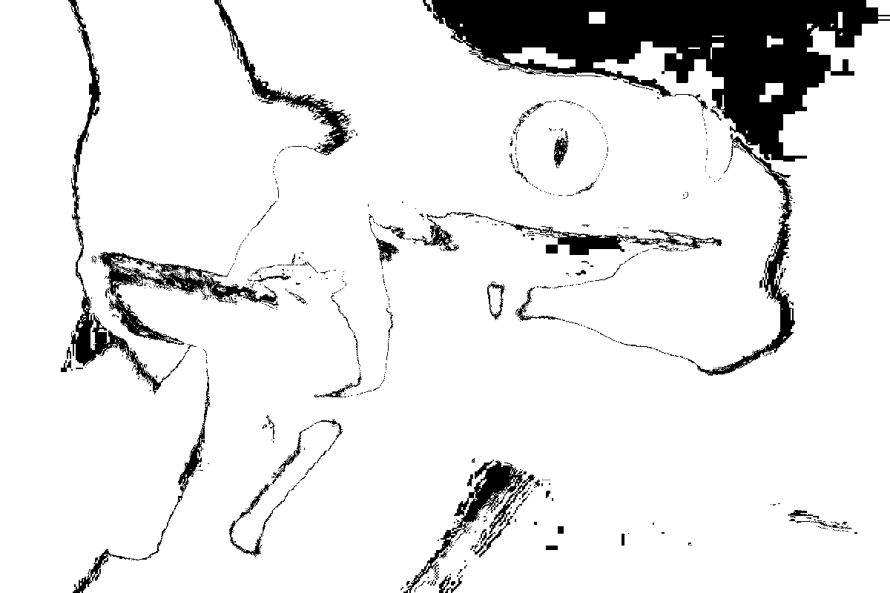

Docker + Imagemagick
Create a local imagemagick image from alpine
To create a local imagemagick image from alpine we need to :
- Download the latest alpine image with pull.
- Start an interactive container with run.
- Install imagemagick with apk then quit the container.
- Create a new image from the changed container with commit.
# download the lastest `alpine` image
$ docker pull alpine
# start an interactive container named `temp`
$ docker run --interactive --tty --name temp alpine
# install `imagemagick`, clear the cache then quit
/ $ apk --update add imagemagick
/ $ rm --recursive --force /var/cache/apk/*
/ $ exit
# create the `imagemagick` image
$ docker commit temp imagemagick
We can list our 2 images :
$ docker images
REPOSITORY TAG IMAGE ID CREATED SIZE
imagemagick latest b4e64a05b218 5 seconds ago 99.9MB
alpine latest 965ea09ff2eb 5 weeks ago 5.55MB
It can be noted that the addition of imagemagick has increased the weight of more than 90 MB !
Convert an image to black and white with imagemagick
To play around black and white image we will :
- Download an image.
- Start an interactive container with the volume option.
- Use imagemagick to convert the colorspace to Gray.
- Try different ways to get a pixel color value.
- Take a look at ITU-R BT 709 and ITU-R BT 601 formats.
- Convert the image into another colorspace and compare the result.
Let’s get a frog.jpg image from a git repository :
# download an image hosted in a github repository
$ git clone \
--depth 1 \
https://github.com/jeromedecoster/black-white-docker-imagemagick.git \
/tmp/bw
# the image is here
$ ls /tmp/bw
frog.jpg
We launch the container with the --rm option to automatically remove the container when it exits.
We convert the image to a black and white using -colorspace Gray.
# start an interactive container
$ docker run \
--interactive \
--tty \
--rm \
--volume /tmp/bw:/tmp \
imagemagick
# convert to `Gray`
/ $ convert /tmp/frog.jpg \
-colorspace Gray \
/tmp/frog-gray.png
To get the color value of the first pixel (x:0, y:0) we use the following syntax :
# the colored version
/ $ convert /tmp/frog.jpg[1x1+0+0] txt: \
| sed 's/ /\n/g' \
| tail -n 1
srgb(194,202,103)
# the back and white version
/ $ convert /tmp/frog-gray.png[1x1+0+0] txt: \
| sed 's/ /\n/g' \
| tail -n 1
gray(193)
To get the color as RGB value we use the -format syntax :
# the colored version
/ $ convert /tmp/frog.jpg[1x1+0+0] \
-format "%[fx:int(255*r)],%[fx:int(255*g)],%[fx:int(255*b)]" info:
194,202,103
# the back and white version
/ $ convert /tmp/frog-gray.png[1x1+0+0] \
-format "%[fx:int(255*r)],%[fx:int(255*g)],%[fx:int(255*b)]" info:
193,193,193
As described in the -colorspace documentation, the conversion to Gray is calculated using this formula :
Gray = 0,212656 * R + 0,715158 * G + 0,072186 * B
This is the Rec 709 Luma coefficients.
The RGB values of the first pixel are (Red:194, Green:202, Blue:103).
Let’s compute the Gray value :
Gray value = 0,212656 * Red + 0,715158 * Green + 0,072186 * Blue
= 0,212656 * 194 + 0,715158 * 202 + 0,072186 * 103
= 41,255264 + 144,461916 + 7,435158
= 193,152338
# rounded value
= 193
Ok, we found the (Gray:193) value. This confirm that -colorspace Gray is equal to -grayscale Rec709luma.
Let’s try another color conversion with the Rec 601 format.
Imagemagick indicate the Rec601Luma formula :
Gray = 0,298839 * R + 0,586811 * G + 0,114350 * B
Let’s compute the Gray value with this formula :
Gray value = 0,298839 * Red + 0,586811 * Green + 0,114350 * Blue
= 0,298839 * 194 + 0,586811 * 202 + 0,114350 * 103
= 57,974766 + 118,535822 + 11,77805
= 188,288638
# rounded value
= 188
Now we found the (Gray:188) value.
Let’s try to see if we can confirm it with imagemagick :
# convert to `Rec601Luma`
/ $ convert /tmp/frog.jpg \
-grayscale Rec601Luma \
/tmp/frog-601.png
The converted image is visually very close :
Now we get the Gray value of the first pixel :
# get the first pixel value
/ $ convert /tmp/frog-601.png[1x1+0+0] txt: \
| sed 's/ /\n/g' \
| tail -n 1
gray(188)
It’s confirmed !
We can compare the 2 images using compare with the -lowlight-color and -highlight-color options :
# compare the 2 images
/ $ compare /tmp/frog-gray.png \
/tmp/frog-601.png \
-lowlight-color black \
-highlight-color white \
/tmp/diff.png
The white pixels indicates the changed colors :
